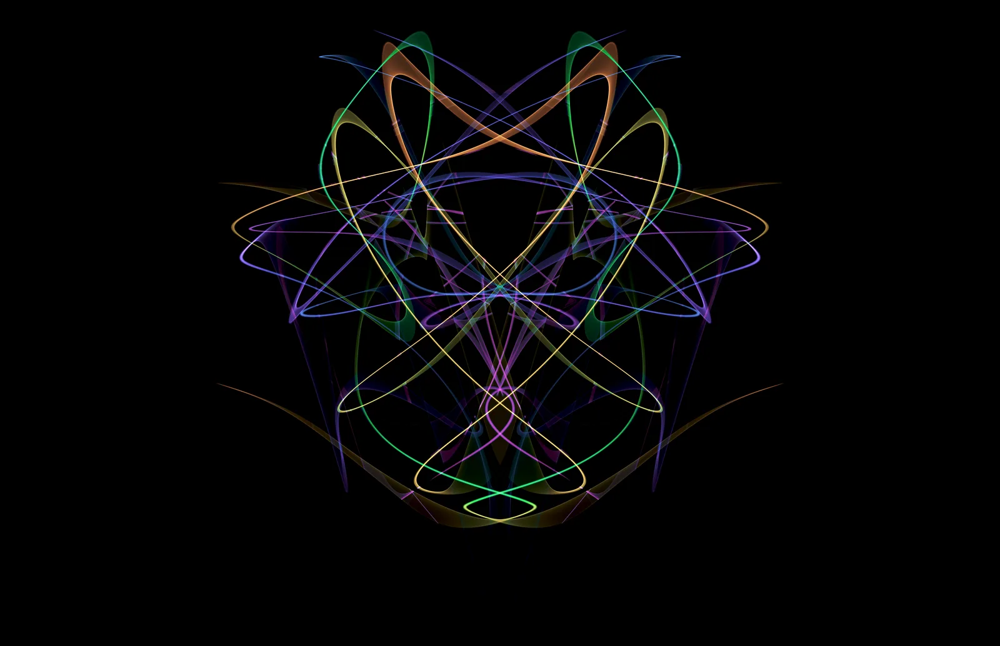
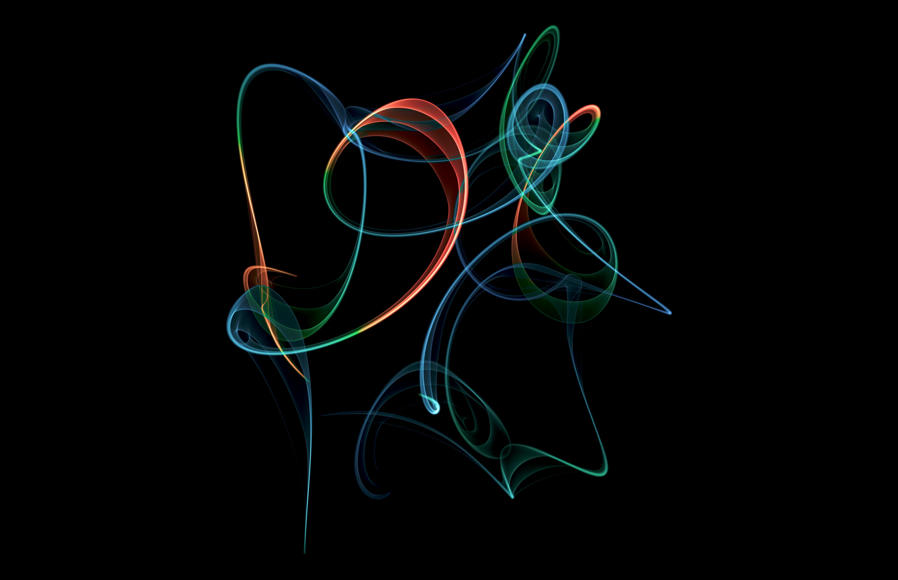
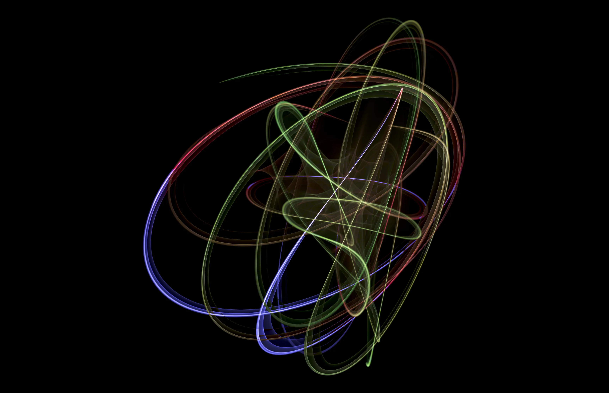
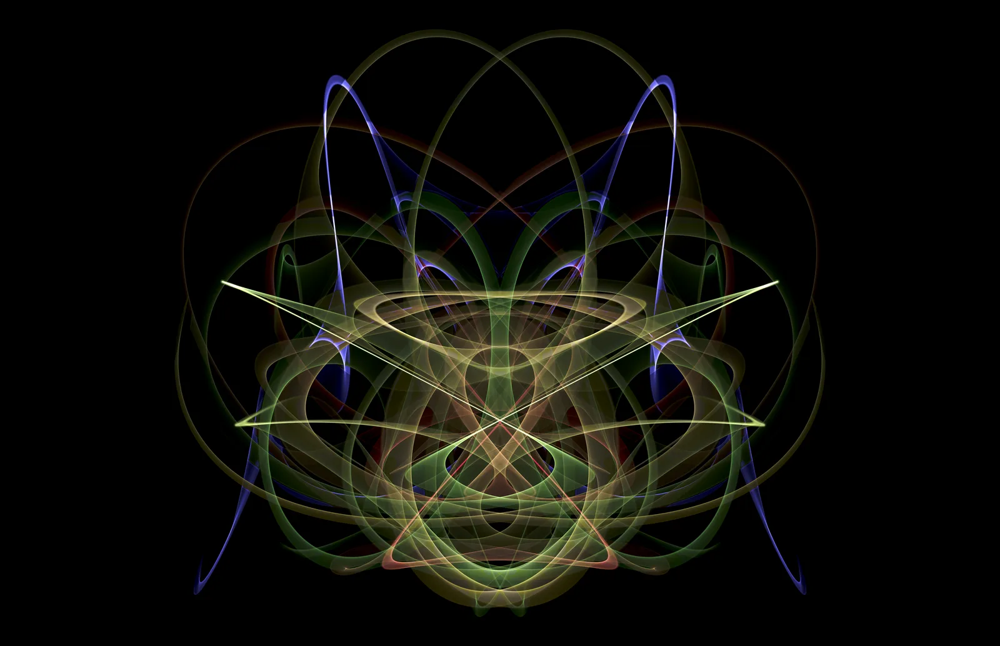
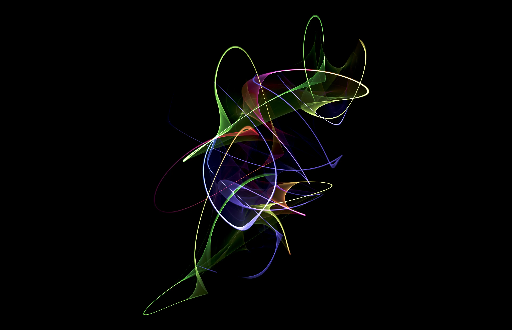
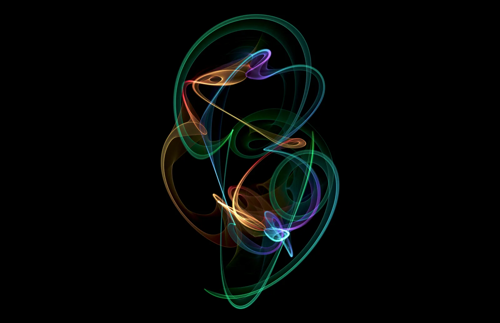

THE COLLECTION / AN EDITORIAL SELECTION
An atlas of
possibilities.
Follow a curve.
Find another way of seeing.



A POINT OF DEPARTURE



An editorial study
in light and trace.
One collection. Many ways to see.Enter an ink study ↗